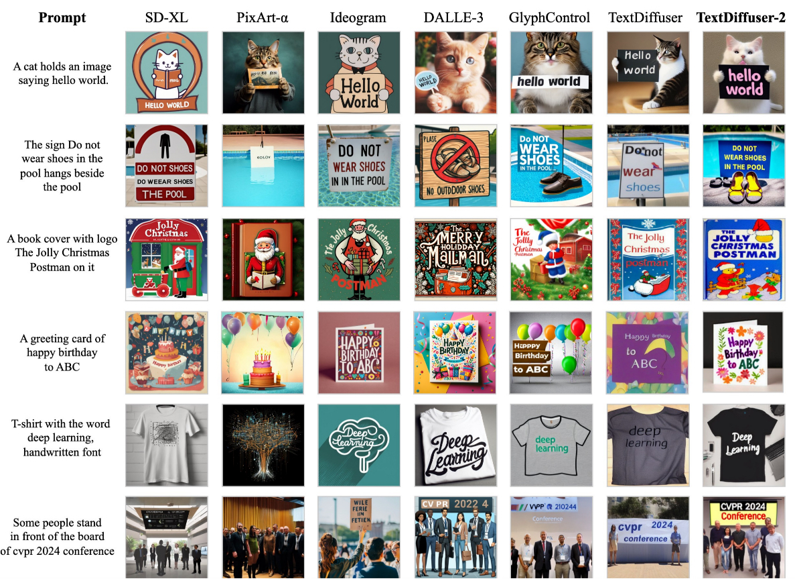
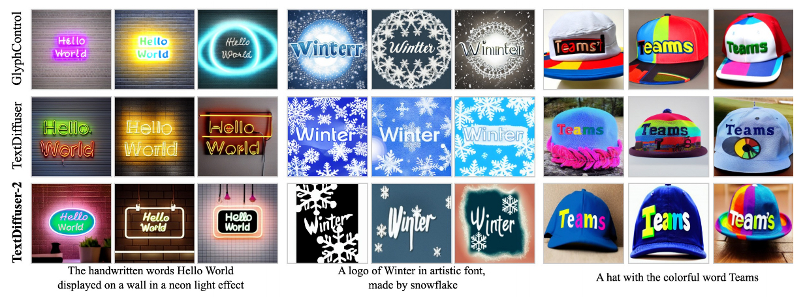
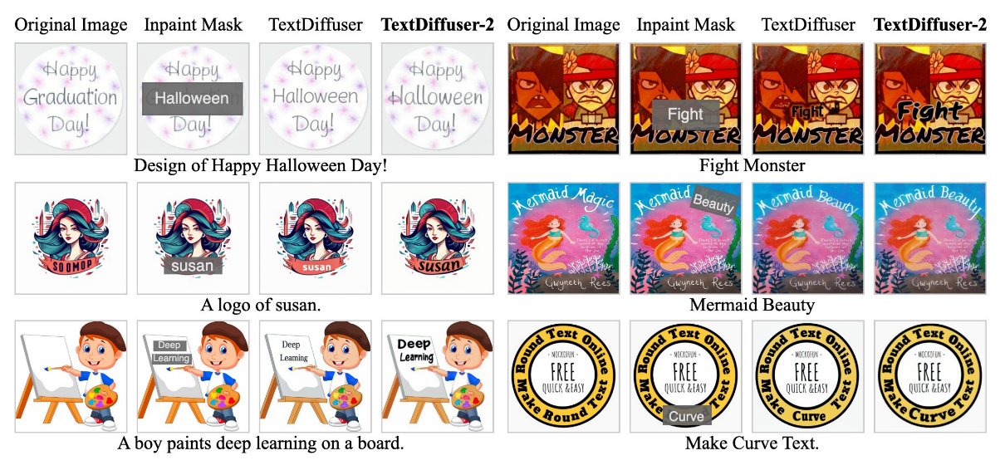
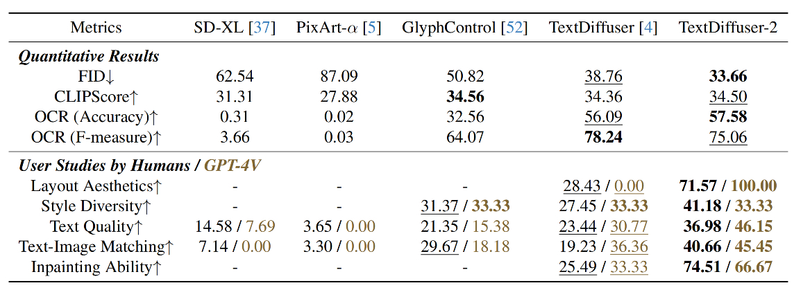

Abstract
The diffusion model has been proven a powerful generative model in recent years, yet remains a challenge in generating visual text. Several methods alleviated this issue by incorporating explicit text position and content as guidance on where and what text to render. However, these methods still suffer from several drawbacks, such as limited flexibility and automation, constrained capability of layout prediction, and restricted style diversity. In this paper, we present TextDiffuser-2, aiming to unleash the power of language models for text rendering. Firstly, we fine-tune a large language model for layout planning. The large language model is capable of automatically generating keywords for text rendering and also supports layout modification through chatting. Secondly, we utilize the language model within the diffusion model to encode the position and texts at the line level. Unlike previous methods that employed tight character-level guidance, this approach generates more diverse text images. We conduct extensive experiments and incorporate user studies involving human participants as well as GPT-4V, validating TextDiffuser-2's capacity to achieve a more rational text layout and generation with enhanced diversity.
Motivation - Why TextDiffuser-2 is Needed? 🤷♂
- (1) Limited flexibility and automation: GlyphControl needs users to design glyph images to provide layout guidance, while GlyphDraw and TextDiffuser rely on the manual specification of keywords. These requirements hinder the direct conversion of natural user prompts into corresponding images, thereby narrowing the flexibility and automation capabilities.
- (2) Constrained capability of layout prediction: GlyphDraw can only render images with a single text line, constraining its applicability for scenarios involving multiple text lines. For TextDiffuser, the produced text layouts are not visually appealing, which is primarily attributed to the limited capability of the Layout Transformer.
- (3) Restricted style diversity: For TextDiffuser, the utilization of character-level segmentation masks as control signals implicitly imposes constraints on the position of each character, thereby restricting the diversity of text styles and posing challenges when rendering handwritten or artistic fonts.
- (4) No open-source code: Existing methods may not provide available code, API, or demo.
TextDiffuser-2 Pipeline

The architecture of TextDiffuser-2. The language model M1 and the diffusion model are trained in two stages. The language model M1 can convert the user prompt into a language-format layout and also allows users to specify keywords optionally. Further, the prompt and language-format layout is encoded with the trainable language model M2 within the diffusion model for generating images. M1 is trained via the cross-entropy loss in the first stage, while M2 and U-Net are trained using the denoising L2 loss in the second stage.
Text-to-Image Visualizations
Visualizations of text-to-image results compared with existing methods. TextDiffuser-2 can automatically extract keywords from prompts for accurate rendering. Additionally, the fonts generated by TextDiffuser-2 exhibit a wide range of diversity.
Style Diversity
Visualization of diversity in generating multiple images under the same prompt. TextDiffuser-2 is capable of generating more artistic fonts, with increased diversity in the positioning of characters and the inclination angle of text lines.
Inpainting Ability
Visualizations of the text inpainting task compared with TextDiffuser. TextDiffuser-2 can generate more coherent text.
Quantitative Result
Demonstration of the quantitative results and user studies. We also incorporate GPT-4V into the user studies. The best and second-best results are indicated in bold and underlined formats. TextDiffuser-2 achieves the best results under the majority of metrics.
Contact
For help or issues using TextDiffuser-2, please email Jingye Chen (qwerty.chen@connect.ust.hk) , Yupan Huang (huangyp28@mail2.sysu.edu.cn) or submit a GitHub issue. For other communications related to TextDiffuser-2, please contact Lei Cui (lecu@microsoft.com) or Furu Wei (fuwei@microsoft.com).BibTeX
@article{chen2023textdiffuser,
title={TextDiffuser-2: Unleashing the Power of Language Models for Text Rendering},
author={Chen, Jingye and Huang, Yupan and Lv, Tengchao and Cui, Lei and Chen, Qifeng and Wei, Furu},
journal={arXiv preprint arXiv:2311.16465},
year={2023}
}